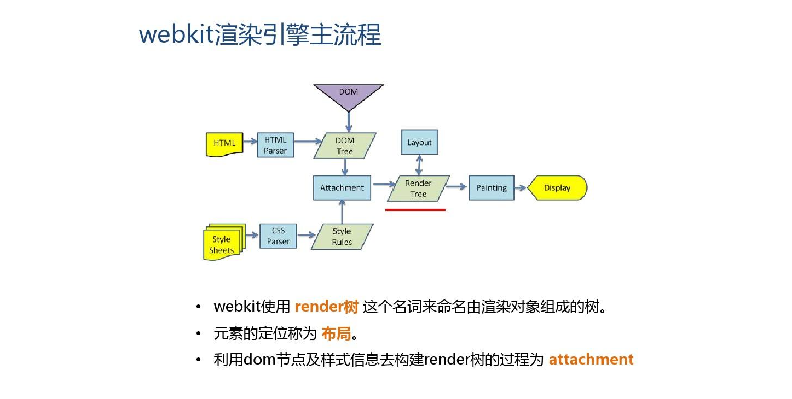

如何处理移动端 1px 渲染成 2px 的问题
局部处理
- mate 标签中 viewport 属性，initial-scale 属性设置为 1
- rem 按照设计稿标准走，外加利用 transform 的 scale(0.5) 缩小一半
全局处理
- mate 标签中 viewport 属性，initial-scale 属性设置为 0.5
- rem 按照设计稿标准走
BFC - Box、Formatting Context - 块级格式化上下文
BFC 是一个独立的渲染区域，只有 Block-level box 参与，它规定了内部的 Block-level Box 如何布局，并且与这个区域外部毫不相干。
Box 是 CSS 布局的对象和基本单位，一个页面是由一个或多个 Box 组成。元素的类型和 display 属性决定了这个 Box 的类型。不同类型的 Box 会参与不同的 Formatting Context（一个决定如何选人文档的容器），因此 Box 内的元素会以不同的方式渲染。
创建规则
- 根元素
- 浮动元素（float 不取值为 none）
- 绝对定位元素（position 取值为 absolute 或 fixed）
- display 取值为 inline-block、table-cell、flex、inline-flex 之一的元素
- overflow 不取值为 visible 的元素
作用
- 可以包含浮动元素
- 不被浮动元素覆盖
- 阻止父子元素 margin 折叠
IE 盒模型、W3C 盒模型
W3C 盒模型：内容（content）、填充（padding）、边界（margin）、边框（border）；
- box-sizing: content-box
- width = content width
IE 盒模型：IE 的 content 部分把 border 和 padding 计算进去了
- box-sizing: border-box
- width = border + padding + content width
居中
水平居中方法
- 元素为行内元素，设置父元素 text-align:center
- 如果元素宽度固定，可以设置左右 margin 为 auto
- 如果元素为绝对定位，设置父元素 position:relative，元素设 left:0;right:0;margin:auto
- 使用 flex-box 布局，指定 justify-content 属性为 center
- display 设置为 table-cell
垂直居中的方法
- 将显示方式设置为表格，display:table-cell，同时设置 vertial-align:middle
- 使用 flex 布局，设置 align-items: center
- 绝对定位总设置 bottom:0;top:0;，并设置 margin:auto
- 绝对定位中固定高度时，设置 top:50%;margin-top 值为高度一半的负值
- 文本垂直居中设置 line-height 为 height 值
https://juejin.cn/post/6914831351271292936?utm_source=gold_browser_extension
当一个 CSS 文件很大的时候，如果还没有下载完成，js会不会执行
1 |
|
将网速调整至低速，执行以上代码，会发现能够控制台第一时间输出的是 before css 之后能够获取到 h1 标签，但是却没有渲染出来，也就说明 CSS 下载过程并不会阻塞 DOM 的解析，但是会阻塞 DOM 的渲染。隔了一段时间之后才能看到 after css 的字样，但这不能证明会阻塞，但是当我们去掉 link 标签之后，after css 会马上被打印出来，这样就能够证明 CSS 的下载会阻塞 js 的执行
附webkit流程一张

关于浏览器性能优化的需要重新开一个写
https://blog.csdn.net/y_programmer_ape/article/details/107307676